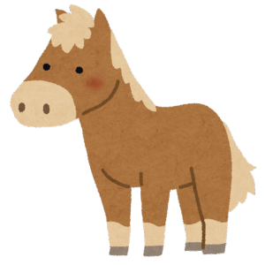

ポニー

みなさん、目の前にいるポニーをじっくり見てみてください。よくウマの赤ちゃんに間違えられますが、実はこれで、もう立派なおとなのウマなんです。
ウマのなかまで、おとなになっても背中の高さが1メートル50センチより小さいウマたちのことを、まとめて「ポニー」と呼びます。
ポニーはとっても頭がよくて、優しくて、力持ちな性格をしています。大昔から人間の代わりに重い荷物を運んだり、畑をたがやすお手伝いをしたりして、人と一緒に仲良く暮らしてきました。
体が小さくても、とってもタフで元気いっぱいです。ポニーの優しい目を見つめてみてくださいね。